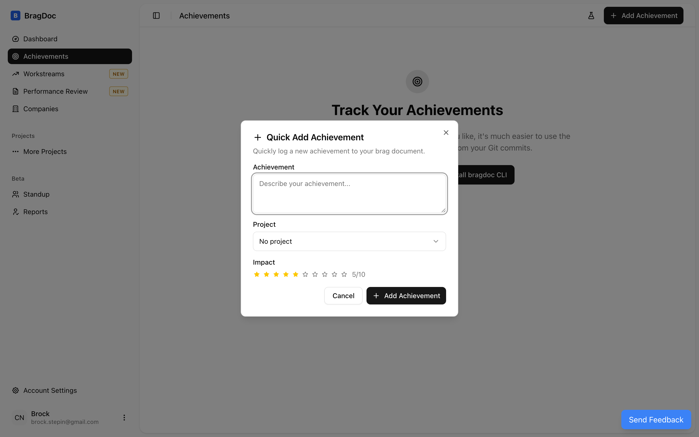
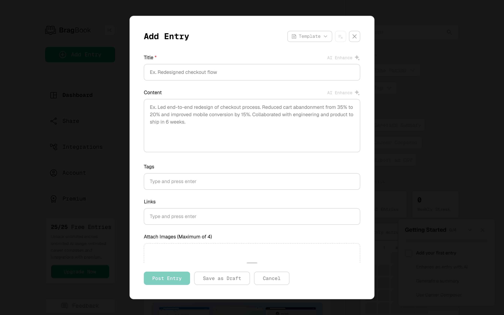
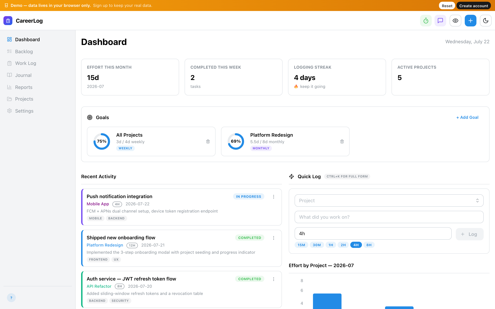
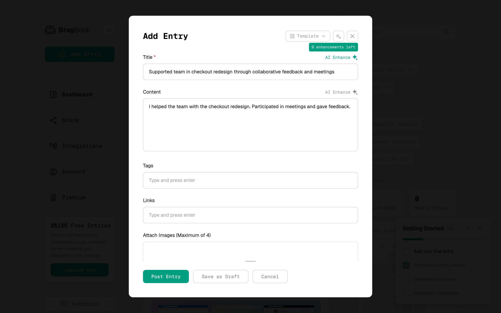
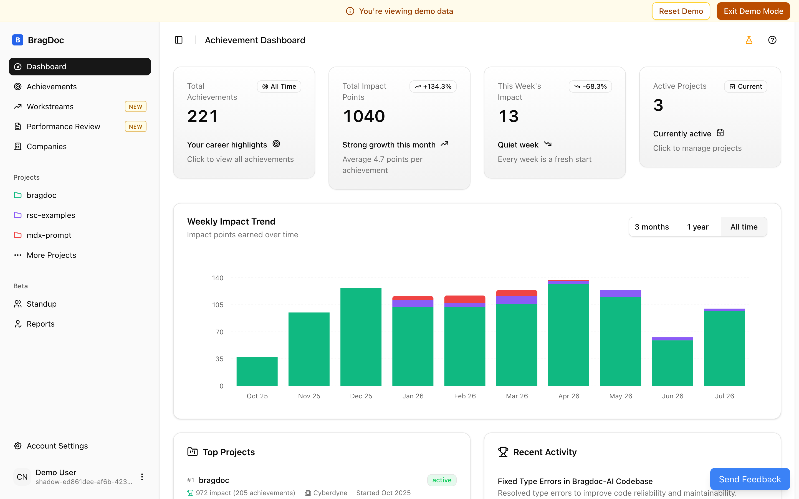
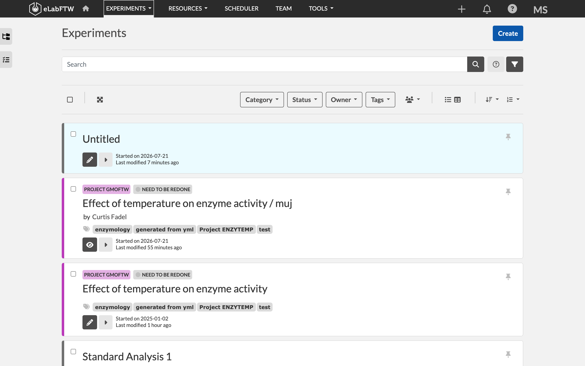
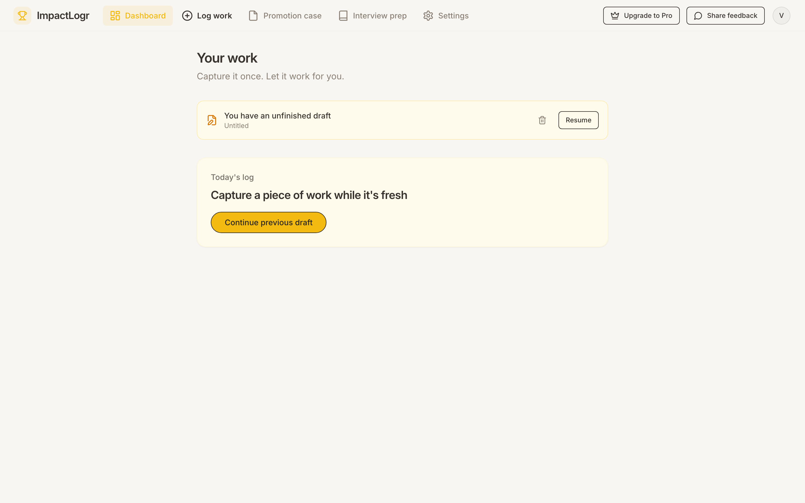

Career Evidence Tool — система, що збирає робочі досягнення з доказами в момент, коли вони стаються, щоб у сезон рев'ю не відновлювати все по пам'яті. Для дизайнерів, PM і розробників у командах з циклами перформанс-рев'ю.
Кинути скріншот чи цитату колеги — не проблема. Ламається наступний крок: коли настає рев'ю, зібрати купу розрізнених скрінів, нотаток і цитат у готову самооцінку, буллети для CV чи кейс портфоліо. Через це люди кидають такі продукти на другому записі. Зведення кроків 03–06 про те, чому так і що з цим робити.
Прямих конкурентів близько восьми, і в жодного немає користувачів. Найпомітніший має 22 голоси на Product Hunt. Зрив стається не на реєстрації, а на другому записі.
«We're winding down Bragdocs, after nearly 5 years… Stats: 1400 people who created at least one post, created a total of 9100 posts. We had a bit of a spam signup problem which led to a further 10,000+ extra users.»Jonny Burch, співзасновник Progression · bragdocs.com/@jonny, 25.11.2024
Троє найактивніших дали 914 записів із 9 100. Решта 1 397 людей поділили те, що лишилось.
| Продукт | Аудиторія / хто платить | Основа | Ключовий механізм | Вхід | Запис | Вихід |
|---|---|---|---|---|---|---|
| Bragduck | інженери, PM, дизайнери; платить сам | хмарне сховище, прив'язане до цілей | автозбір GitHub/Jira через CLI+MCP, AI-звіт | 5 | 4 | AI-звіт PDF/буфер; повний експорт платний |
| BragBook | дизайнери, розробники, PM; платить сам | хмарна стрічка з колекціями | кнопка AI Enhance переписує сирий текст | 4 | 4 | текст/PDF/CSV; публічний профіль |
| bragdoc.ai | розробники з git; безкоштовний | хмарна база текстів, доказів у схемі нема | CLI читає коміти, LLM пише досягнення | 5 | 4 | Markdown-документ рев'ю |
| ImpactLogr | фахівці перед рев'ю, ~110 наборів під роль; платить сам | таблиця «дія-контекст-результат» | коуч у браузері ловить слабкі формулювання | 6 | 7 | AI-кейс від 5 записів; експорт лише друк PDF |
| CareerLog | фахівці, орієнтовані на кар'єру; платить сам | local-first: work log + журнал + цілі | Quick Log з гарячою клавішею; звіти й стендапи | 3 | 4 | звіти, стендапи; дані лише в браузері |
| Продукт | Аудиторія / хто платить | Основа | Ключовий механізм | Вхід | Запис | Вихід |
|---|---|---|---|---|---|---|
| Збірники з Git | розробники з GitHub; безкоштовно | не сховище — одноразовий читач | реконструкція заднім числом однією командою | 8 | — | markdown-файли, перезаписуються |
| Geekbot | команди Slack/Teams; платить роботодавець | планувальник опитувань за розкладом | бот питає в Slack, де людина вже сидить | 1 | 3 | пост у канал; архів компанії |
| eLabFTW | науковці; платить установа | сховище датованих записів із вкладеннями | запис блокується й засвідчується таймстемпом | 9 | 1 | PDF/A, ZIP, JSON; дані свої |
| PebblePad | студенти й викладачі; платить заклад | сховище + конструктор шаблонів | заклад видає шаблон, викладач перевіряє | 9 | 7 | оцінка викладача; PDF поштучно |
| Interfolio Dossier | академіки; платить сам | сховище кар'єрних файлів + розсилання | вічне зберігання конфіденційних листів | 4 | 6 | доставка пакета адресату; ZIP |
| Продукт | Аудиторія / хто платить | Основа | Ключовий механізм | Вхід | Запис | Вихід |
|---|---|---|---|---|---|---|
| Emacs org-capture | користувачі Emacs; платять часом | швидка адресна вставка в локальний файл | шаблон сам підтягує посилання й виділене | 8 | 1 | текстовий файл; експорт у будь-що |
| Zotero | науковці; платять лише за синк | локальна база структурованих записів | один клік у браузері заповнює запис сам | 3 | 1 | посилання в 9000+ форматів |
| Timely | агенції; платить роботодавець | пасивний журнал активності | фоновий запис вікон, потім AI-чернетка | 9 | 2 | табель; CSV/XLS/PDF |
| Expensify | працівники; платить компанія | сховище витрат, запис не існує без чека | SmartScan витягує суму/дату з фото | 3 | 2 | гроші на рахунок; CSV |
| FourteenFish | британські лікарі; платить сам (£50/рік) | сховище датованих записів із файлами | чернетка в приватні нотатки, потім розбір | 5 | 2 | річний PDF; вивантаження пачкою |
BragBook, bragdoc.ai, ImpactLogr пройдено власним акаунтом; CareerLog і eLabFTW — через демо. Bragduck лишається в матриці завдяки даним із відкритого коду сайту (екрани зняти не вдалося — перевірка на бота). Тертя Timely — реконструкція з документації. За межами п'ятірки — один живий HARD-гравець, у який зайти не вдалося: Career Journal (формат STAR); реєстрація зависає, з лендінга даних замало.
Кожен патерн — не з одного продукту, а той самий вибір, повторений по всій ніші. Тому нижче по кілька скрінів із різних конкурентів.
У формах немає полів під число до/після чи цитату з автором. Усе, що є, — текст і мітки. Уся ніша зберігає переказ роботи, а не саму роботу.



Центральна фіча скрізь — не сховище доказу, а AI, що робить формулювання «кращими». Це працює проти доказовості. А чисел: 22 голоси, 2 голоси, 25 зірок.


Мінімальний ввід і окрема чернетка є в усіх. Тобто наша пара інбокс + розбір — вхідний квиток, а не відмінність.


Людина в момент події чи машина заднім числом. Полюси — збірники з Git проти ImpactLogr. Посередині Zotero й Expensify: людина приносить доказ, машина заповнює нудне.
Geekbot — архів компанії. PebblePad попереджає вивантажити до втрати логіна. Проти цього org-capture (файл, 20 років) і Zotero (тека лишиться).
Expensify — гроші одразу. FourteenFish — документ раз на рік під примус закону. Кар'єрні продукти — найгірша позиція: віддача накопичувальна, а до неї не тримає нічого.
Взято вимір, на якому провалюється весь ринок — збірка накопичених уламків у придатний вихід — і знайдено тих, хто його вирішив, з різних категорій.
Точна межа порожнечі: дехто вже збирає активність (CareerLog генерує стендапи й звіти з логу). Ніхто не збирає докази — метрику до/після, цитату з автором, скріншот — у перевірюваний вихід для рев'ю.
| Критерій | Zotero | Readwise | Photos | Granola | Strava |
|---|---|---|---|---|---|
| 1. Віддача без зусиль | 2 | 5 | 5 | 5 | 5 |
| 2. Поріг до першого результату | 5 | 5 | 3 | 5 | 4 |
| 3. Групування | 2 | 3 | 5 | 4 | 5 |
| 4. Зв'язок із джерелом | 5 | 5 | 5 | 4 | 5 |
| 5. Не вигадує | 5 | 4 | 3 | 3 | 4 |
| 6. Змінність виходу | 5 | 5 | 4 | 5 | 5 |
| 7. Повернення до забутого | 2 | 5 | 5 | 4 | 4 |
| 8. Придатність до винесення | 5 | 4 | 3 | 2 | 4 |
| Разом із 40 | 31 | 36 | 33 | 32 | 36 |
Дві оцінки знижені вручну для зіставності: Readwise за винесенням 5→4 (дані в хмарі), Granola за «не вигадує» 4→3 (аудіо не зберігається).
Окремі поля залежно від типу: число було/стало/одиниця, цитата текст/автор/джерело. Можна відфільтрувати найсильніше й підставити в самооцінку чи буллет саме доказ.
Джерело: типи полів Zotero · чек-як-доказ Expensify · потреба — патерн ринку №1
Половина сирі, половина давно не чіпані; після показу ймовірність повтору різко падає — за місяць проходить увесь інбокс без набридання. Мета не «запам'ятати», а «дорозібрати».
Джерело: денне рев'ю Readwise · алгоритм спаду
У базі факти, окремо шаблони; порожній блок зникає — запис без метрики дає коротший результат, а не діру чи вигадку. Без AI, як злиття пошти.
Джерело: специфікація CSL · Style Preview
Механізми поєднані в конвеєр: №2 повертає забутий запис → №1 дає що дописати → №3 дає вихід.
У Photos болючий кадр — виняток. У нас провалений реліз, конфлікт, зрізаний скоуп — нормальний вміст. Якщо система винесе «ось твій квартал» і туди потрапить зрізаний проєкт, людина перестане записувати важке.
Доказ шкоди: «телефон не розуміє, що моя мати померла… показав ці фото в річному підсумку під заспокійливу музику». Побічно підтверджує рішення проти гейміфікації: «If it's not on Strava it didn't happen» — Strava пробувала полагодити серії тричі й не змогла.
П'ять принципово різних патернів за трьома осями: хто ініціює, що є одиницею вводу, звідки структура. Розкладка — інбокс: артефакт + рядок; розбір: форма.
Людина приносить об'єкт (скрін, файл, посилання), і об'єкт сам стає записом. Три причини: єдиний патерн, де доказ і є запис (§7); дає безкоштовно контекст, яким склеюємо (§5–6); тільки тут можливий нуль обов'язкових полів (§6).
Еталон: розширення Zotero · SmartScan Expensify
Наставництво, зрізаний скоуп, рішення на зустрічі — хапати нема чого. Тоді рядок, але тільки дата й тег, і розібране показане одразу. Дрібна ідея: структурні поля краще вводити чіпами (тап «2г»), а не парсингом тексту. Еталони — Todoist, Things; окремих посилань не звірено, дані не підтверджені.
Три причини, кожна фатальна: аудиторія (дизайнери, PM — §3) не лишає машинних слідів; фіксує активність, а не вплив (§2); суперечить локальності (§5) — перетворює архів на стеження за собою.
§ — розділи CLAUDE.md. Таксономія патернів аналітична; приклади продуктів мають джерела.
Усе нижче — гіпотези фази дизайну, не доведені факти. Кожна названа з розділом, з якого випливає.
Одиниця запису — гібрид: чернетка падає сама, у розборі піднімається в досягнення або чіпляється до наявного. В інбоксі нуль обов'язкових полів.
← Патерни
Чотири типи (скрін, цитата з автором, число до/після, посилання) — окремі поля, що з'являються при збагаченні й не блокують збереження порожніми.
← Бенчмарк (мех. 1) + Конкуренти (патерн №1)
Проєкт/фіча/тема = тег (пре-заповнюється з контексту). Спрінт/квартал = фільтр за датою. Збіг слів → обережне питання, ніколи не автосклеювання.
← Бенчмарк (мех. 2)
Зріз «що ти зробив цього місяця» автоматично, без генерації тексту — щоб повернення настало до того, як звичка зламається.
← Конкуренти (зрив на другому записі) + Бенчмарк (Readwise)
Ні серій, ні оцінок тижня. Максимум — фактичний рядок без осуду.
← Бенчмарк (мех.-що-не-спрацює + дослідження Strava)
Нуль живих скарг користувачів, лише статті про користь. Перевірити на людях: чи готова людина витрачати зусилля весь рік заради виходу, який і так зліпить за вечір.
← Конкуренти
Засновник визнав відсутність PMF на Hacker News у грудні 2021; конкретне посилання на тред не звірялося до рівня цитати.
← Конкуренти
Обидві заявлені «порожнечі» стоять на невдалих спробах доступу агентів, а не на доказах відсутності. Треба перевірити руками.
← Конкуренти
Career Journal і Bragduck зсередини не пройдено (реєстрація зависає / перевірка на бота). Bragduck лишили в матриці завдяки коду; Career Journal — за виноскою. Заявлені 2 500 користувачів Career Journal — не підтверджені.
← Конкуренти
Один із живих HARD-конкурентів (CareerLog) робить local-first і серію днів разом — контрприклад до Г5. Рішення поки не переглядаємо; повернутись, коли зрозуміємо, чи серія тримає людей.
← Бенчмарк (Г5) + Конкуренти